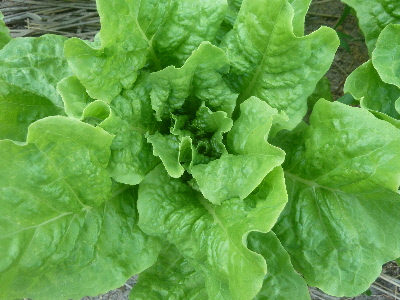
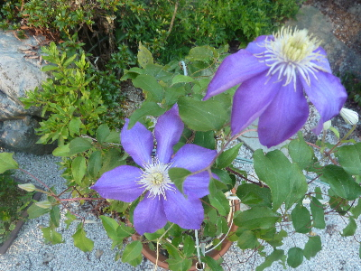
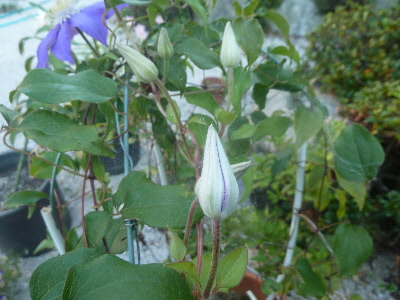
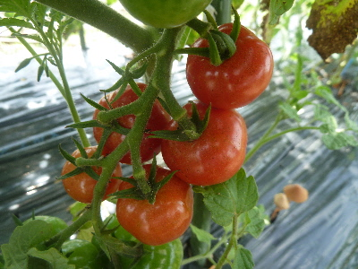
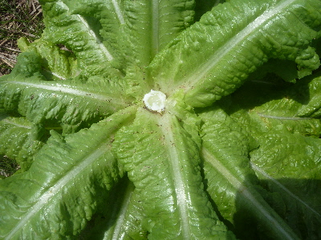
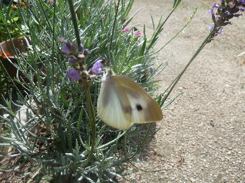

遊びで植物を育てよう
2018/07/21
サンチェの収穫が始まりました。
暑いときはサラダがたべやすくていいですね。

トマトやキュウリとセットにして食べてます。
【7月TOP】
【日記TOP】
【園芸TOP】
2018/07/15
クレマチスが今頃見頃になりました。
今年は5月にあんまり花がなかったんですが、代わりに今ごろ咲きだしました。

花の大きさが小さい気もしますが綺麗に咲いています。

つぼみがまだあるので、もうちょっと楽しめそうです。
【7月TOP】
【日記TOP】
【園芸TOP】
2018/07/01
暑かったので作業中にトマトを食べました。
今日は暑かったです。
足取りが重く、あまりやる気がでませんでした。

途中水分補給でトマトを食べました。
何か食べると気分が変わりますね。ちょっとやる気がでました。
【7月TOP】
【日記TOP】
【園芸TOP】
2018/07/01
サニーレタスがほぼ終了です。
毎日沢山食べてたサニーレタスですが、上りだしたので上部を切り取って終了です。

今週はまだ沢山食べれますが、来週からはちょっとになるかな。
次からはキュウリが大量に採れそうなので、生野菜のシーズンはまだまだ続きそうです。
【7月TOP】
【日記TOP】
【園芸TOP】
2018/07/01
モンシロチョウはラベンダーが好きみたい。
ラベンダーに蝶が寄ってきてました。

よほど好きなようで、近くで写真を撮ってもあまり逃げませんでした。
素手でも捕まえれたかも？
【7月TOP】
【日記TOP】
【園芸TOP】
過去の日記
【2024年7月の日記】
【2023年7月の日記】
【2022年7月の日記】
【2021年7月の日記】
【2020年7月の日記】
【2019年7月の日記】
【2018年7月の日記】
【2017年7月の日記】
【2016年7月の日記】
【2015年7月の日記】
【2014年7月の日記】
【2013年7月の日記】
【2012年7月の日記】
【7月TOP】
【日記TOP】
【園芸TOP】
熱中症に注意しましょう。
【おいしいものを食べよう。】【たくさん寝よう。】
【ソロ活をしよう!】【季節感のあることをしよう。】【動画視聴はほどほどに。】【当サイトの全てのコンテンツは無断転載禁止です。】